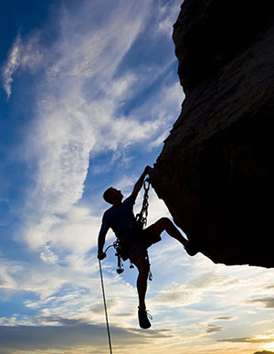
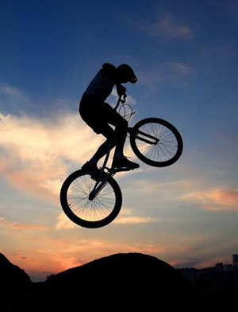
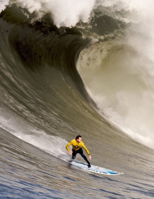

极限运动是由多项成型运动项目以及游戏、生活和工作中的各种动作演变来，参与人群以年轻人为主的高难度观赏性体育运动。人类在与自然的融合过程中，借助于现代高科技手段，最大限度地发挥自我身心潜能，向自身挑战的娱乐体育运动。它除了追求竞技体育超越自我生理极限“更高、更快、更强”的精神外，更强调参与、娱乐和勇敢精神，追求在跨越心理障碍时所获得的愉悦感和成就感，同时，它还体现了人类返璞归真、回归自然、保护环境的美好愿望，因此已被世界各国誉为“未来体育运动”。(想了解更多可点击这里,链接将跳转到中国极限运动网)

山地车，英文名叫“mountain bike”，缩写为MTB。起源于美国，是美国青年为了寻求刺激，在摩托车比赛的越野场地上驾驶自行车进行花样比赛而派生发展起来的车型。最早骑山地自行车进行越野的，是一位美国加利福尼亚大学的学生斯科特(James Finley Scott)，他是第一位将普通自行车改装成山地车式样的人。以后越野运动逐渐在欧美流行，并形成赛事。1990年国际自行车联盟承认这项运动，1991 年首次举行世界杯赛。在闲暇的时候，我也经常和朋友一起去骑车，一般我们会其很远，早饭和午饭都是自带。骑车的过程很令人享受，不仅看来许多地方的风景，还锻炼身体。

冲浪是以海浪为动力的极限运动，冲浪者在海里有适宜海浪的地方俯卧或坐在冲浪板上等待，当合适的海浪逐渐靠近的时候，冲浪者调整板头方向，俯卧在冲浪板上顺着海浪的方向划水，给冲浪板足够的速度使冲浪板保持在海浪的前面，当海浪推动冲浪板滑动时，冲浪者站起身体，两腿前后自然站立，两膝微屈，利用身体重心、肩膀和后腿控制冲浪板的走向。冲浪可以让人们忘却烦恼，体验一次次与海浪搏击、驰骋在海浪上的快感。这就是为什么在世界上每天都会有许多人四处寻找着一处最完美的冲浪胜地，仅为完成一次与海浪的完美追逐。
版权保护：版本所有权@重庆师范大学计算机与信息科学学院16计师杨孝明。 tel:18315165574 QQ:572059273 E-mail:18315165574@163.comm 如若有问题，敬请联系 (注：此次网页为重师16计师杨孝明同学大作业学习交流使用，不可商用。)